05 双极结型三极管及放大电路基础：公式讲义版
在上一版公式表基础上，补充“为什么这么写、什么时候用、对应看哪张图”。插图来自 05 号 PPT 页面渲染。
阅读顺序
1. BJT 电流关系
2. 放大作用
3. 静态工作点
4. 图解法与负载线
5. 小信号模型
6. 共射放大电路
7. 分压式偏置
8. 共集与共基
9. 组合与复合管
10. 频率响应
1. BJT 放大状态下的电流关系
看图：载流子传输
发射极电流 \(I_E\) 进入管内后，一部分成为基极电流 \(I_B\)，大部分被集电极收集形成 \(I_C\)。所以先记住“电流守恒”，再用 \(\alpha\) 和 \(\beta\) 描述电流放大能力。
- \(\alpha\)：共基电流放大系数，表示集电极得到发射极电流的比例。
- \(\beta\)：共射电流放大系数，最常用于放大电路计算。
- 工程估算里常把穿透电流忽略，于是 \(I_C\simeq \beta I_B\)。
\[ I_E=I_B+I_C \]
\[ I_C=I_{NC}+I_{CBO} \]
\[ \alpha=\frac{I_{NC}}{I_E},\qquad I_C\simeq \alpha I_E \]
\[ \beta=\frac{\alpha}{1-\alpha},\qquad \alpha=\frac{\beta}{1+\beta} \]
\[ I_C\simeq \beta I_B,\qquad I_{CEO}=(1+\beta)I_{CBO} \]
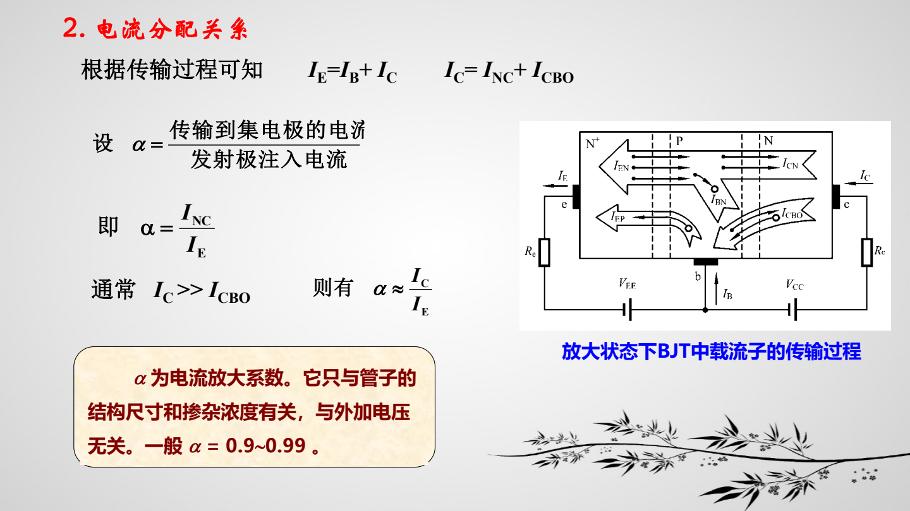
2. 为什么 BJT 能放大
核心：小输入控制大输出
输入端的小电压变化会引起发射极或基极电流的小变化，经过晶体管电流放大后，集电极电流变化流过负载电阻 \(R_L\)，转化为更大的输出电压变化。
输出电压前面的负号表示共射类输出常与输入反相。
\[ \Delta i_C=\alpha\Delta i_E \]
\[ \Delta v_o=-\Delta i_C R_L \]
\[ A_v=\frac{\Delta v_o}{\Delta v_i} \]
\[ A_v=\frac{0.98\,\mathrm{V}}{20\,\mathrm{mV}}\approx 49 \]
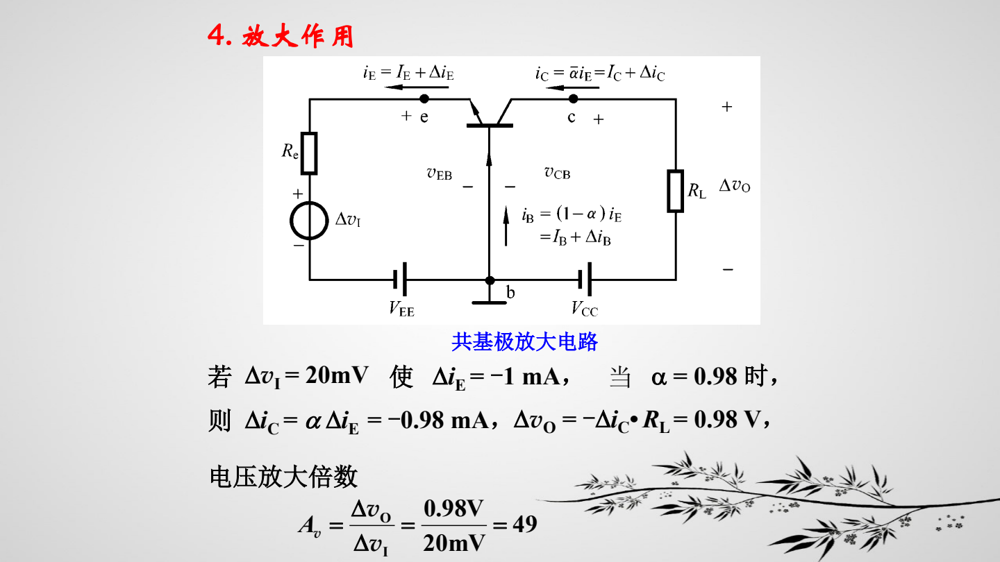
3. 固定偏置共射电路的静态工作点
先算直流，再算交流
静态工作点 \(Q\) 是没有输入信号时的 \(I_{BQ}\)、\(I_{CQ}\)、\(V_{CEQ}\)。它决定三极管工作在截止、放大还是饱和，也决定交流信号有没有足够摆幅。
固定偏置电路的计算顺序通常是：先由基极回路求 \(I_{BQ}\)，再由 \(\beta\) 求 \(I_{CQ}\)，最后由集电极回路求 \(V_{CEQ}\)。
\[ I_{BQ}=\frac{V_{BB}-V_{BEQ}}{R_b} \]
\[ I_{CQ}\simeq \beta I_{BQ} \]
\[ V_{CEQ}=V_{CC}-I_{CQ}R_C \]
\[ V_{CE}=V_{CC}-i_CR_C \]
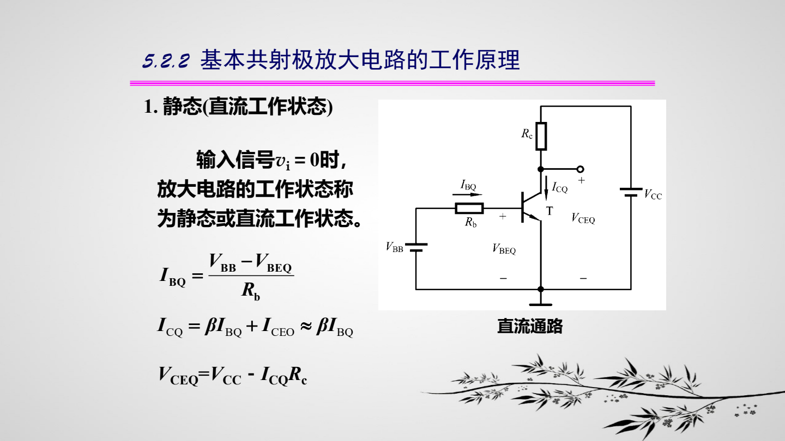
4. 用负载线判断工作状态
看交点：Q 点在哪里
直流负载线来自集电极回路方程。它和输出特性曲线的交点就是 \(Q\) 点。若计算得到的 \(\beta I_B\) 超过电路允许的最大集电极电流，三极管会进入饱和区，不能再按 \(I_C=\beta I_B\) 继续增大。
\[ I_{CS}\simeq \frac{V_{CC}}{R_C} \]
\[ \beta I_B\lt I_{CS}\Rightarrow \text{放大区} \]
\[ \beta I_B\ge I_{CS}\Rightarrow \text{饱和区} \]
\[ I_B\simeq 0\Rightarrow \text{截止区} \]
\[ u_o=V_{CC}-I_CR_C \]
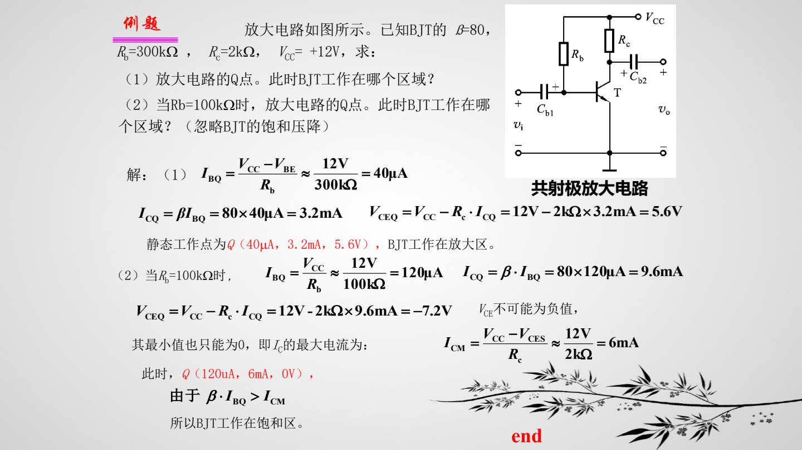
5. h 参数小信号模型
把非线性管子线性化
小信号分析只研究 \(Q\) 点附近的微小变化，因此可以把 BJT 等效成线性受控源模型。课件后面的放大倍数、输入电阻、输出电阻公式，都是从这个模型推出来的。
\[ v_{be}=h_{ie}i_b+h_{re}v_{ce} \]
\[ i_c=h_{fe}i_b+h_{oe}v_{ce} \]
\[ v_{be}\simeq h_{ie}i_b,\qquad i_c\simeq \beta i_b \]
\[ r_{be}=r_{bb'}+(1+\beta)r_{b'e} \]
\[ r_{be}\approx 200\Omega +(1+\beta)\frac{26\,\mathrm{mV}}{I_{EQ}(\mathrm{mA})} \]
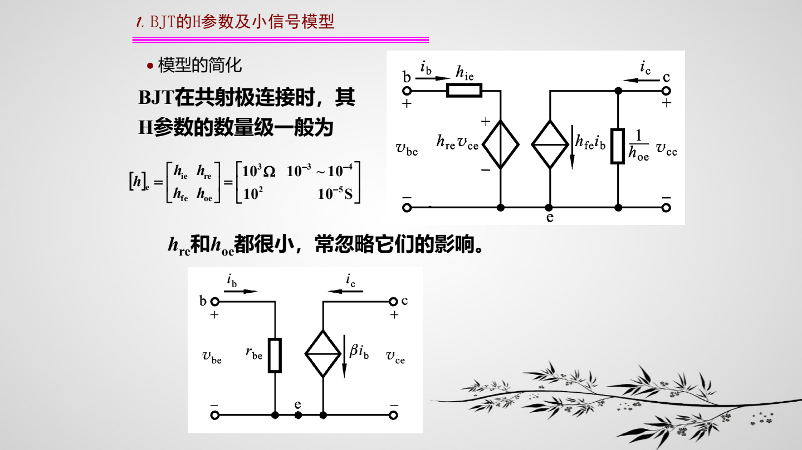
6. 基本共射放大电路的小信号指标
最常考：反相电压放大
共射电路的输出取自集电极。因为 \(i_c\) 增大时 \(R_C\) 上压降增大，集电极电压下降，所以电压增益带负号。若基极偏置电阻对交流来说很大，输入电阻主要由 \(r_{be}\) 决定。
\[ v_i=i_b(R_b+r_{be}),\qquad i_c=\beta i_b \]
\[ v_o=-i_c(R_C\,/ /\,R_L) \]
\[ A_v=\frac{v_o}{v_i}=-\frac{\beta(R_C\,/ /\,R_L)}{R_b+r_{be}} \]
\[ A_v\approx-\frac{\beta(R_C\,/ /\,R_L)}{r_{be}}\quad (R_b\gg r_{be}) \]
\[ R_i=R_b\,/ /\,r_{be}\approx r_{be},\qquad R_o\approx R_C \]
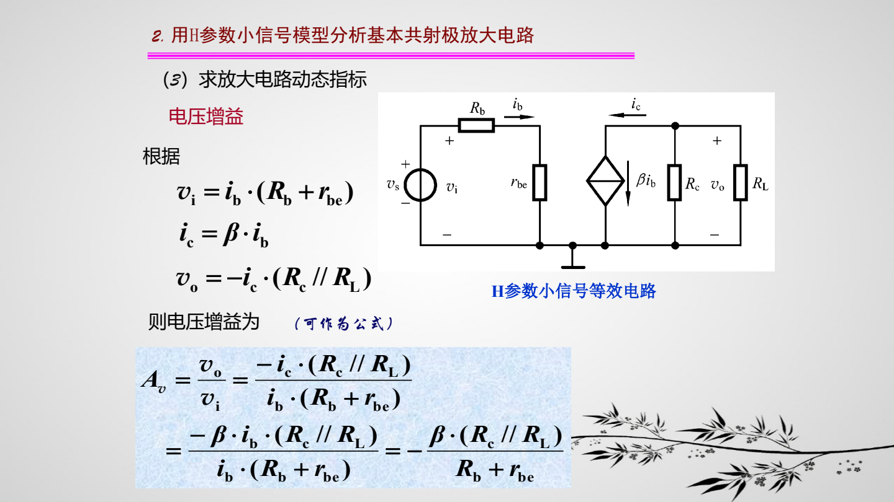
7. 信号源内阻与负载电阻的影响
输入端和输出端都会“分压”
信号源内阻 \(R_s\) 会和放大电路输入电阻 \(R_i\) 分压，使真正加到输入端的 \(v_i\) 小于 \(v_s\)。负载 \(R_L\) 与 \(R_C\) 并联，会降低等效输出电阻，从而影响电压增益。
\[ A_{vs}=\frac{v_o}{v_s}=A_v\frac{R_i}{R_s+R_i} \]
\[ A_v=A_{vo}\frac{R_L}{R_o+R_L} \]
\[ R_C'=R_C\,/ /\,R_L \]
记忆：\(R_i\) 越大，输入信号损失越小；\(R_o\) 越小，带负载能力越强。
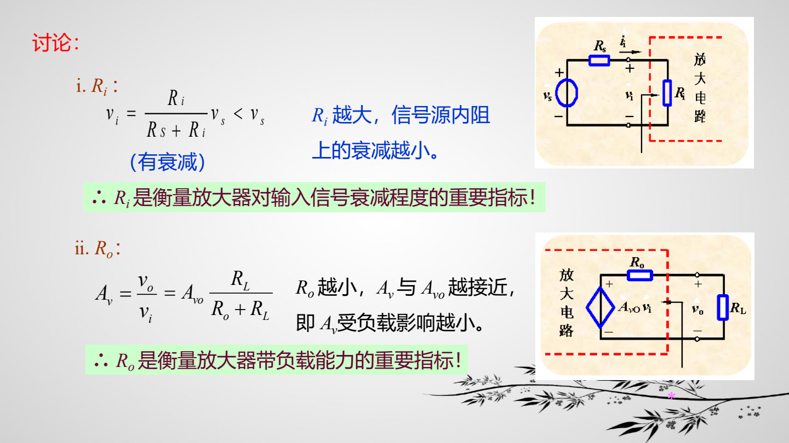
8. 分压式射极偏置：让 Q 点更稳定
负反馈稳定静态点
分压式偏置用 \(R_{b1}\)、\(R_{b2}\) 近似固定基极电压，再用射极电阻 \(R_E\) 引入直流负反馈。温度升高导致 \(I_C\) 增大时，\(I_E R_E\) 增大，\(V_{BE}\) 减小，基极电流下降，从而抑制 \(I_C\) 继续增大。
\[ V_{BQ}\simeq \frac{R_{b2}}{R_{b1}+R_{b2}}V_{CC} \]
\[ I_{EQ}\simeq \frac{V_{BQ}-V_{BEQ}}{R_E},\qquad I_{CQ}\simeq I_{EQ} \]
\[ V_{CEQ}\simeq V_{CC}-I_{CQ}(R_C+R_E) \]
\[ I_{BQ}=\frac{I_{CQ}}{\beta} \]
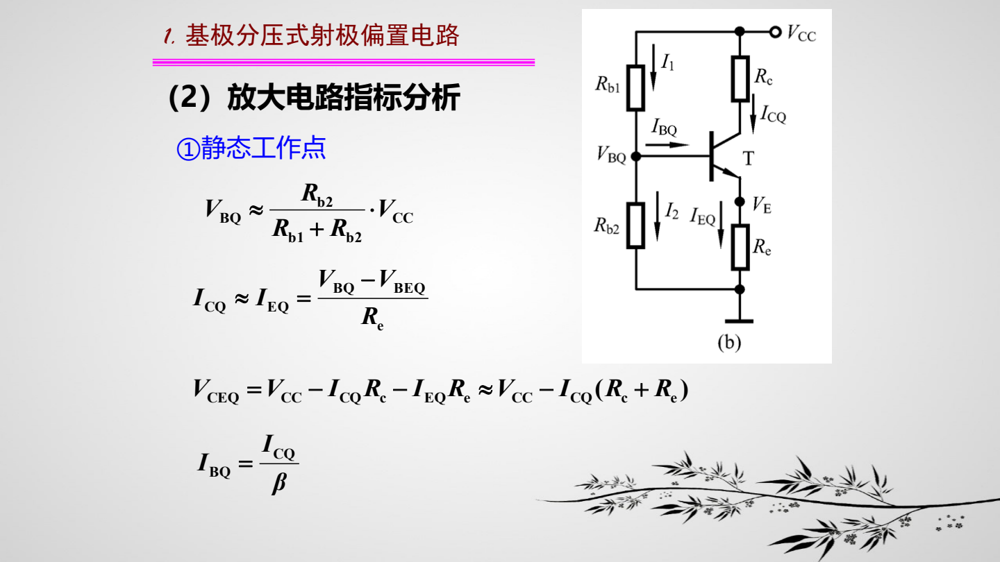
9. 分压式偏置的小信号指标
射极电阻让增益变小但更稳
如果 \(R_E\) 没有被旁路电容短路，交流信号也会经过 \(R_E\)，形成交流负反馈，电压增益下降，输入电阻上升。若 \(C_E\) 足够大，交流时 \(R_E\) 近似短路，增益又回到普通共射公式。
\[ R_b=R_{b1}\,/ /\,R_{b2} \]
\[ A_v=-\frac{\beta(R_C\,/ /\,R_L)}{r_{be}+(1+\beta)R_E} \]
\[ R_i=R_b\,/ /\,\left[r_{be}+(1+\beta)R_E\right] \]
\[ R_o\approx R_C \]
\[ C_E\text{ 旁路 }R_E:\quad A_v\approx-\frac{\beta(R_C\,/ /\,R_L)}{r_{be}} \]
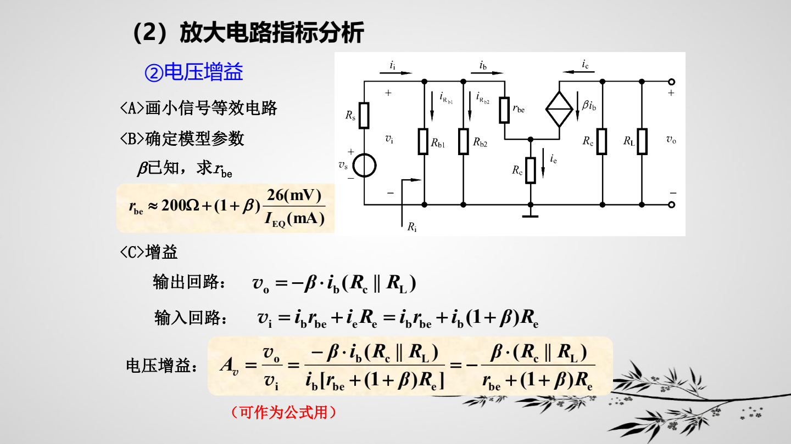
10. 共集电极放大电路（射极输出器）
电压跟随，输入电阻大
共集电路输出取自射极，输出电压跟随输入电压，所以电压增益接近 1。它常用于缓冲：不追求电压放大，而追求高输入电阻、低输出电阻和较强带负载能力。
\[ R_L'=R_E\,/ /\,R_L \]
\[ A_v=\frac{(1+\beta)R_L'}{r_{be}+(1+\beta)R_L'}\approx 1 \]
\[ R_i=R_b\,/ /\,\left[r_{be}+(1+\beta)R_L'\right] \]
\[ R_o=R_E\,/ /\,\frac{R_s+r_{be}}{1+\beta} \]
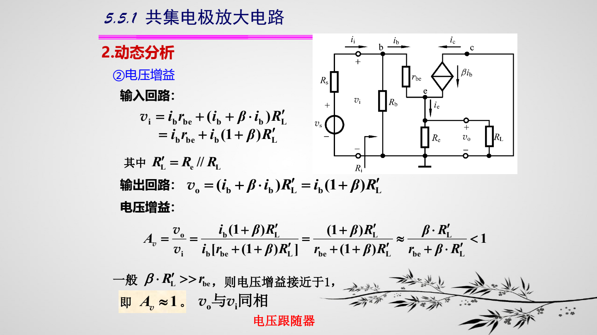
11. 共基极放大电路与三种组态对比
共基：输入小，频率特性好
共基电路输入在射极，输出在集电极，电压增益为正。它的输入电阻很小，常用于需要低输入阻抗或较高频率性能的场合。和共射、共集对比时，重点看电压增益符号、输入电阻和输出电阻。
\[ A_v=\frac{\beta(R_C\,/ /\,R_L)}{r_{be}} \]
\[ R_i=R_E\,/ /\,\frac{r_{be}}{1+\beta} \]
\[ R_o\approx R_C \]
| 组态 | 电压增益特点 | 输入电阻 | 输出电阻 |
|---|---|---|---|
| 共射 | 大，反相 | 中等 | 较大 |
| 共集 | 约 1，同相 | 大 | 小 |
| 共基 | 大，同相 | 小 | 较大 |
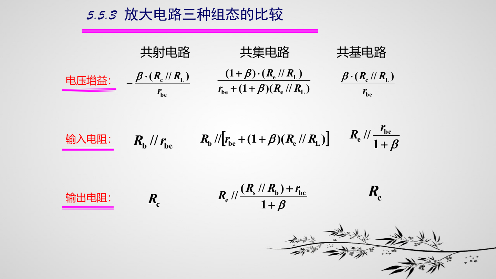
12. 组合放大电路：逐级相乘
一级接一级
多级放大电路的总电压增益等于各级电压增益相乘。分析时要注意：前一级的负载往往是后一级的输入电阻，所以不能只看单级空载增益。
\[ A_v=A_{v1}A_{v2}\cdots A_{vn} \]
\[ R_i=R_{i1},\qquad R_o=R_{on} \]
\[ A_{v1}=-\frac{\beta_1R_{i2}'}{r_{be1}},\qquad A_{v2}=-\frac{\beta_2(R_C\,/ /\,R_L)}{r_{be2}+R_E'} \]
\[ A_v=A_{v1}A_{v2} \]
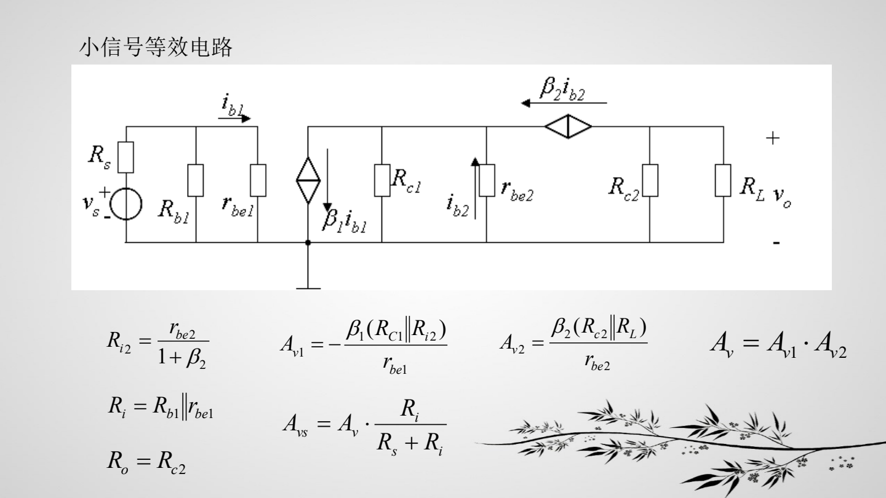
13. 复合管：等效成一个“大 β 管”
提高电流放大能力
复合管把两个晶体管组合成等效三极管。常用近似是总电流放大系数约为两管 \(\beta\) 的乘积，因此适合需要大输入电阻或强驱动能力的场合。
\[ \beta\simeq \beta_1\beta_2 \]
\[ r_{be}=r_{be1}+(1+\beta_1)r_{be2} \]
\[ A_v=\frac{(1+\beta)R_L'}{r_{be}+(1+\beta)R_L'}\approx 1 \]
\[ R_o=R_E\,/ /\,\frac{R_s+r_{be}}{1+\beta} \]
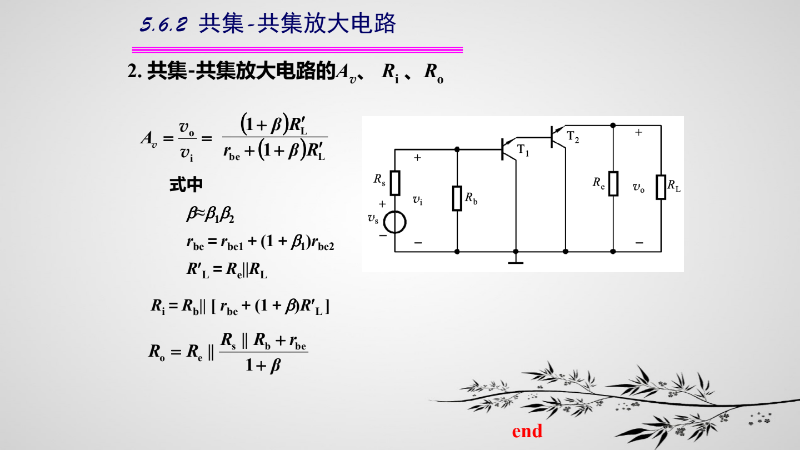
14. 频率响应：低频和高频都会掉增益
中频最大，两端下降
实际放大电路中，耦合电容和旁路电容会影响低频响应，结电容和分布电容会影响高频响应。中频段增益近似为 \(|A_{vm}|\)，当频率到达下限频率 \(f_L\) 或上限频率 \(f_H\) 时，增益下降到中频增益的 \(1/\sqrt{2}\)，也就是 -3 dB。
\[ |A_v|=|A_{vm}|\frac{1}{\sqrt{1+\left(\dfrac{f_L}{f}\right)^2}}\frac{1}{\sqrt{1+\left(\dfrac{f}{f_H}\right)^2}} \]
\[ f=f_L\text{ 或 }f=f_H\Rightarrow |A_v|=\frac{|A_{vm}|}{\sqrt{2}} \]
\[ 20\lg\frac{|A_v|}{|A_{vm}|}=-3\,\mathrm{dB} \]
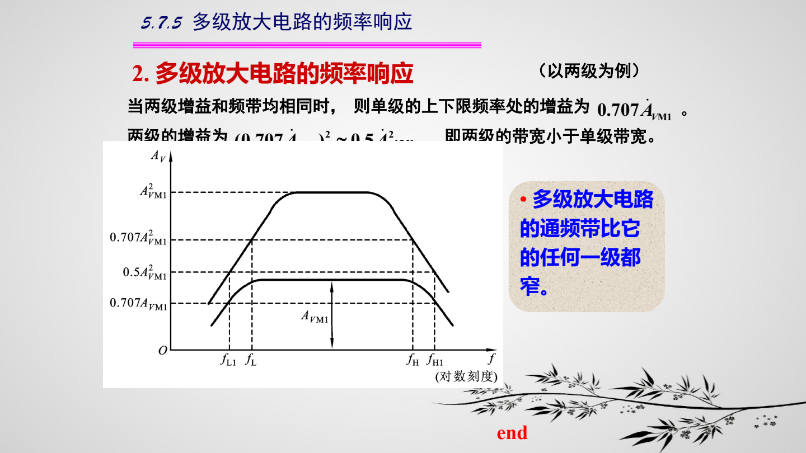
源文件：ppt/05 双极结型三极管及放大电路基础.pdf；插图为对应 PPT 页面渲染。